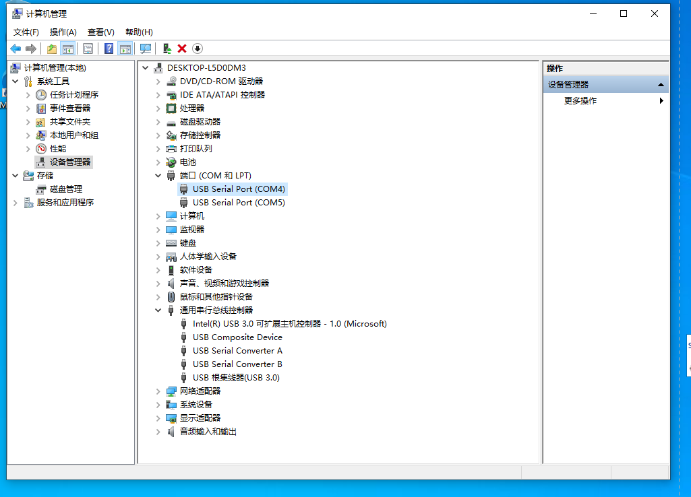

Maix Bit USB 驱动安装
Linux
Linux 不需要装驱动，系统自带了，使用 ls /dev/ttyUSB* 即可看到设备号
Windows
开发板分为新旧两版，需要分别安装不同的驱动
Maix Bit（旧版）
Windows 下载 ch340 ch341 driver 安装即可，然后可以在 设备管理器 中看到串口设备
Maix Bit 新版带麦克风版本（使用CH552） 开发板
开发板使用了 CH552 芯片来实现 USB 转串口功能，没有 JTAG 模拟功能，Windows 需要安装 FT2232 的驱动，
- USB 驱动: FT2232 ->下载链接点这里
我们在拿到 MaixPy 开发板并连接到电脑的时候, 可以打开设备管理器查看串口驱动是否已经安装,打开设备管理器的方法有:
- 此电脑(右键) -> 属性 -> 设备管理器
- 开始菜单(右键) -> 设备管理器
- 控制面板 -> (搜索)设备管理器

当我们的系统是 Windows 10 系统,系统则会帮我们自动安装驱动，而如果是旧版 Win7，win8 系统，我们就需要自己手动安装 USB 驱动:

打开上一节的的链接下载驱动

点击安装

安装完成之后,可以在设备管理器看到已经识别到两个串口设备了(其中只有一个串口可用)
